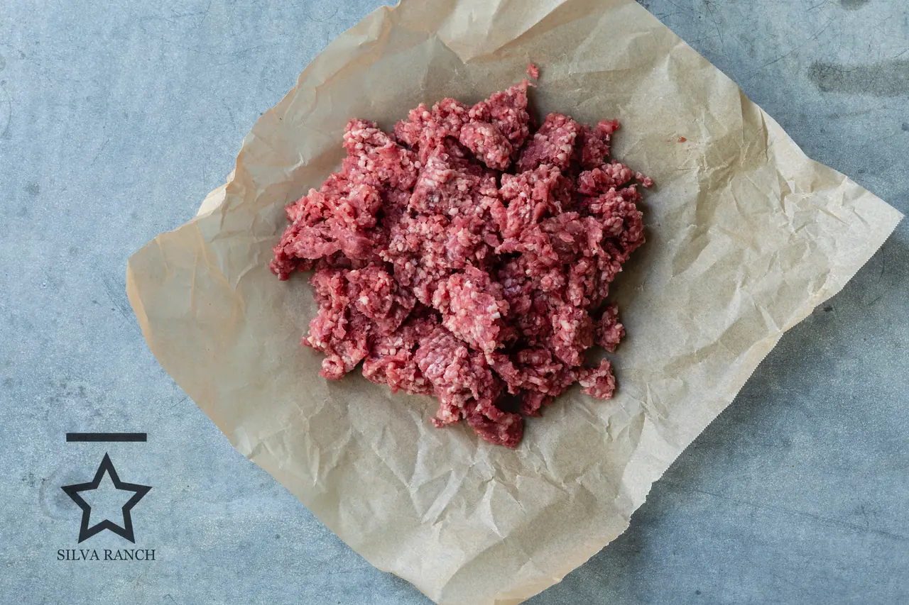
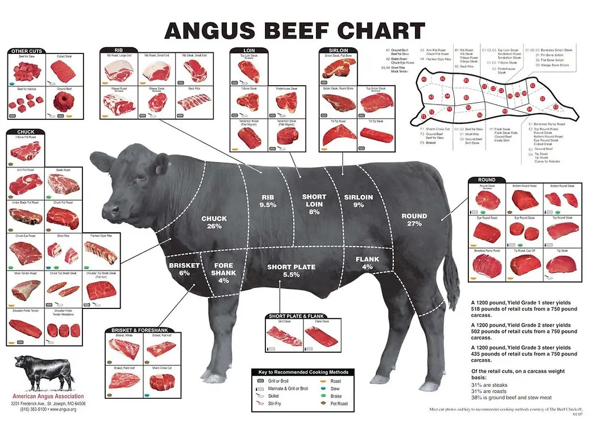

Ranch Direct Beef
Buy a share of one animal.
Whole, half or quarter. Raised on grass in the hills of Alameda and Contra Costa Counties and on irrigated pasture in San Joaquin County. Finished the way you want it, dry-aged, and cut to your instructions.
Availability
Call or email for current availability
Reach Rosie at 209-400-2660 and she'll tell you exactly where the harvest schedule stands.
Share sizes
How much beef, and how much freezer.
A share is a portion of one animal, not a box of packages. Buying it this way is what keeps the price down — there's no storefront, no middleman and no packaging cost baked in.
Quarter
The usual starting point. Fits in the freezer compartment of a large fridge plus a little overflow, or comfortably in a small chest freezer.
Half
Our most popular order, usually grass-finished. One full side of the animal, and you fill out your own cutting sheet.
Whole
Best value per pound. Plan on a dedicated chest freezer. Popular with big families and with two households splitting privately.
A rough rule: one cubic foot of freezer space holds 35 to 40 pounds of vacuum-sealed beef. Figures above are approximate — every animal finishes differently. Call us and we'll size it with you.
Ordering
How your order works.
Send an order request
Tell us the size share you want and whether you'd like it grass or grain finished.
We confirm and take a deposit
We check availability against the harvest schedule and reserve your share. Buying a half or a quarter? We match your order with other families so it adds up to a whole animal. You never have to go find a purchasing partner yourself.
Harvest
You get an email with the harvest date and an estimated pickup window. We arrange the whole handoff to the butcher.
Dry aging, then your cutting sheet
The carcass hangs 14 to 28 days in a temperature-controlled cooler at a state-certified local butcher shop. Once it's weighed you get your cost breakdown and a cutting sheet, so you choose your own steaks, roasts and grind.
Pick it up
The shop custom cuts, vacuum seals and freezes everything. You collect it there.
Cost is based on hanging weight — what the carcass weighs once the hide, head and internal organs are removed. That's usually 55 to 62 percent of the animal's live weight.

Grass or grain
You choose the finish.
Every animal we raise starts on native grass, here in the Central Valley and in the surrounding coastal range hills. A few months before harvest we either leave them on grass, or move them onto a high-quality mixed grain ration.
That's the whole difference. Grass-finished beef is leaner with a stronger, more mineral flavor. Grain-finished carries more fat and a milder, sweeter taste. Neither one is better — it's what your family likes.
Our most popular order is a half of grass-finished beef. If you're torn, call us. We'd rather talk it through than have you guess.
What “finished” actually means
It's a farming word for how an animal is fed in its final weeks before harvest. Nothing more.
What dry aging does
The carcass hangs in a cold, controlled room for two to four weeks. Two things happen. Moisture leaves the muscle, which concentrates the flavor. And the beef's own enzymes break down connective tissue, which makes it tender. It's the same process high-end steakhouses pay a premium for.
Your cuts
Cut the way you want it.
The butcher gives you a cutting instruction sheet so you can say exactly what you want. Anything you don't want as a steak or roast goes into your ground beef — nothing is wasted.
If you'd rather not decide, use our standard Silva Ranch cutting instructions: a mix of steaks, stews, roasts, kabob meat, ground beef, soup bones and dog bones.
Quarter shares work a little differently. Instead of splitting a side into a front and a back quarter, we split it into two mixed quarters, so both customers get an even share of the good cuts.
We don't sell single packages from the ranch, but The Urban Edge Farm and Moondust Farms Market both carry our beef by the cut if you want to try it first.

Ready when you are.
Send the request and Rosie will get back to you with availability. No payment until your share is confirmed.